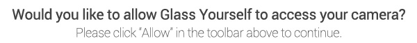

Tweet
"Glass Yourself" was developed by
Ibrahim Kabil
at
GPOP
.
All Glass image and sound assets ©2015 Google.
"Glass Yourself" was developed by Ibrahim Kabil at GPOP.
All Glass image and sound assets ©2015 Google.